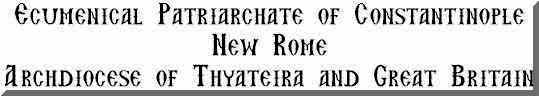
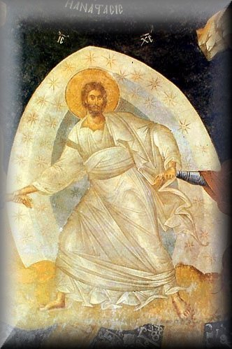

ANASTASIS

Liturgical Texts
Voice of the Fathers
Songs of the Fathers
Obiter Scripta
Welcome to
Anastasis
the Home Page
of Archimandrite Ephrem

Some visitors to these pages have pointed out
that when printed out in black and white only, the distinction between text and
rubrics is lost. This can be overcome if the pages are saved into a word
processor and then edited, rather than being printed directly from the screen.
The original text of nearly all these pages was prepared in Microsoft Word.
Links: My more recent translations of our liturgical
texts contain notes, including biblical and patristic cross references, as well
as discussions of rare or interesting words and expressions. For this reason I
shall put them up in both HTML and PDF formats. In this way they can easily be
downloaded for liturgical use without footnotes. On the web site of the
parish of
St Anthony and St John the Baptist in Islington you will find a simple Commentary on the Divine
Liturgy. REMINDER Unless stated otherwise, all texts and translations on these pages are copyright ©.
Parish of St Anthony and St John the Baptist, Islington
http://www.orthodox-islington.org.uk
As there is now a great deal on these pages, I
have decided to draw attention to recently added material by listing it here and
adding the necessary hyperlinks, and reminders, with hyperlinks, to appropriate
pages from earlier years.